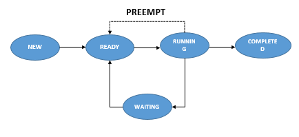

In the deadlock prevention process, the OS will prevent the deadlock from occurring by avoiding any one of the four conditions that caused the deadlock. If the OS can avoid any of the necessary conditions, a deadlock will not occur
No Mutual Exclusion
It means more than one process can have access to a single resource at the same time. It’s impossible because if multiple processes access the same resource simultaneously, there will be chaos. Additionally, no process will be completed. So this is not feasible. Hence, the OS can’t avoid mutual exclusion. Let’s take a practical example to understand this issue. Jack and Jones share a bowl of soup. Both of them want to drink the soup from the same bowl and use a single spoon simultaneously, which is not feasible.
No Hold and Wait
To avoid the hold and wait, there are many ways to acquire all the required resources before starting the execution. But this is also not feasible because a process will use a single resource at a time. Here, the resource utilization will be very less. Before starting the execution, the process does not know how many resources would be required to complete it. In addition to that, the bus time, in which a process will complete and free the resource, is also unknown. Another way is if a process is holding a resource and wants to have additional resources, then it must free the acquired resources. This way, we can avoid the hold and wait condition, but it can result in starvation.
Removal of No Preemption
One of the reasons that cause the deadlock is the no preemption.It means the CPU can’t take acquired resources from any process forcefully even though that process is in a waiting state. If we can remove the no preemption and forcefully take resources from a waiting process, we can avoid the deadlock. This is an implementable logic to avoid deadlock. For example, it’s like taking the bowl from Jones and give it to Jack when he comes to have soup. Let’s assume Jones came first and acquired a resource and went into the waiting state. Now when Jack came, the caterer took the bowl from Jones forcefully and told him not to hold the bowl if you are in a waiting state.

Removal of Circular Wait
In the circular wait, two processes are stuck in the waiting state for the resources which have been held by each other. To avoid the circular wait, we assign a numerical integer value to all resources, and a process has to access the resource in increasing or decreasing order. If the process acquires resources in increasing order, it’ll only have access to the new additional resource if that resource has a higher integer value. And if that resource has a lesser integer value, it must free the acquired resource before taking the new resource and vice-versa for decreasing order. For example, the caterer assigned an integer value to the bowl and the spoon as 1 and 2, respectively, so that one can have access to the resource in increasing order. Now, if Jones has a bowl, then he can have the spoon. But as Jack has a spoon with a greater integer value, he must leave the spoon first and then take the bowl. Thereafter, he will get the spoon to have the soup.
See Videos on Deadlock & Deadlock Detection
To get more insight on what deadlock is, banker's alogrithm & what questions might come in competitive exams please scroll through the catalog
About
Hopefully you've learned what is deadlock & the condition it needs to occur & also how to prevent it